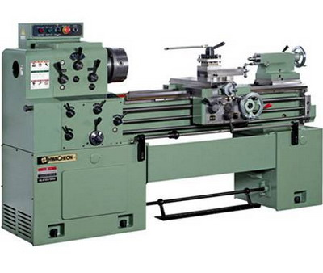
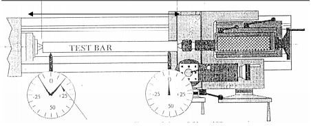
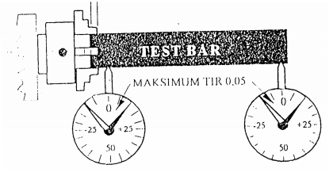

<?xml version="1.0" encoding="UTF-8"?>
<!DOCTYPE html PUBLIC "-//W3C//DTD XHTML 1.0 Transitional//EN" "http://www.w3.org/TR/xhtml1/DTD/xhtml1-transitional.dtd">
<html lang="en" xml:lang="en" xmlns="http://www.w3.org/1999/xhtml">
<!-- Created using eXe: http://exelearning.org -->
<head>
<link rel="stylesheet" type="text/css" href="base.css" /><link rel="stylesheet" type="text/css" href="content.css" /><link rel="stylesheet" type="text/css" href="nav.css" /><title>Pengesetan Mesin Bubut dan Frais </title>
<link rel="shortcut icon" href="favicon.ico" type="image/x-icon" />
<meta http-equiv="Content-Type" content="text/html;  charset=utf-8" />
<script type="text/javascript" src="common.js"></script>
</head>
<body>
<div id="content">
<div id="emptyHeader"></div><div id="siteNav">
<ul>
<li id="active"><a href="index.html" class="active daddy main-node">Pengesetan Mesin Bubut dan Frais</a></li><li><a href="1__pengesetan_ragum.html" class="daddy">1.  Pengesetan Ragum</a><ul class="other-section">
<li><a href="2__penjelasan_langkahlangkah_penjepitan_benda_kerja_pada_ragum.html" class="no-ch">2.  Penjelasan langkah-langkah penjepitan benda kerja pada ragum</a></li>
</ul>
</li>
<li><a href="2_pelat_siku.html" class="no-ch">2. PELAT SIKU</a></li>
<li><a href="3__block_v.html" class="no-ch">3.  BLOCK V</a></li>
<li><a href="4__chuck.html" class="no-ch">4.  CHUCK</a></li>
<li><a href="5__klempenahan.html" class="no-ch">5.  KLEM/PENAHAN.</a></li>
<li><a href="6__meja_putar.html" class="daddy">6.  MEJA PUTAR.</a><ul class="other-section">
<li><a href="i__memasang_meja_putar_.html" class="no-ch">I.  Memasang meja putar :</a></li>
</ul>
</div>
<div id='topPagination'><div class="pagination noprt"><a href="1__pengesetan_ragum.html" class="next"> Next<span> &raquo;</span></a></div>
</div><div id="main">
<div id="nodeDecoration"><h1 id="nodeTitle">Pengesetan Mesin Bubut dan Frais</h1></div>
<div class="objectivesIdevice" id="id9">
<div class="iDevice emphasis1">

<h2 class="iDeviceTitle">Tujuan :</h2>
<div class="iDevice_inner">
<div id="ta9_89_2" class="block" style="display:block;position:relative"><p> Peserta dapat melakukan pengesetan mesin</p></div></div>
</div>
</div>
<div class="FreeTextIdevice" id="id12">
<div class="iDevice emphasis0">
<div id="ta12_1" class="block" style="display:block;position:relative"><p></p></div></div>
</div>
<div class="preknowledgeIdevice" id="id10">
<div class="iDevice emphasis1">

<h2 class="iDeviceTitle">Waktu : </h2>
<div class="iDevice_inner">
<div id="ta10_90_2" class="block" style="display:block;position:relative"><p>4 jam</p></div></div>
</div>
</div>
<div class="FreeTextIdevice" id="id11">
<div class="iDevice emphasis0">
<div id="ta11_1" class="block" style="display:block;position:relative"><p>UJI PARALELITAS MESIN BUBUT <br />Untuk&nbsp; praktek&nbsp; dari&nbsp; mesin&nbsp; bubut&nbsp; ini&nbsp; sebaiknya&nbsp; diuji&nbsp; kepresisian&nbsp; dari&nbsp; mesin&nbsp; yang&nbsp; akan&nbsp; di&nbsp; gunakan.&nbsp; Pengujian <br />yang&nbsp; sederhana&nbsp; adalah&nbsp; dengan&nbsp; melihat&nbsp; kelurusan&nbsp; antara&nbsp; chuck&nbsp; dan&nbsp; sente&nbsp; penahan.&nbsp; Hal&nbsp; ini&nbsp; sangat&nbsp; penting <br />karena akan berpengaruh terhadap kesilindrisan benda hasil bubutan. <br />1.&nbsp; Uji Paralelitas <br />Caranya : <br />a.&nbsp; Memasang senter penahan ( kepala lepas). <br />b.&nbsp; Memasang senter kepala mati(sebelumnya meleoas chuck). <br />c.&nbsp; Memasang benda uji yang telah di gerinda (test bar) di antara dua senter. <br />d.&nbsp; Memasang dial indicator dan mengepaskan ujung penanya pada benda uji. <br />e.&nbsp; Menggerakkan dari tepi ke tepi lainnya, penyimpangan yang di perbolehkan <br />max 0,02 per 100 mm panjang.</p>
<p style="text-align: center;"></p>
<p style="text-align: center;">Pembacaan indicator maksimum 0,01 per 10 mm panjang.</p>
<p style="text-align: left;">2.&nbsp; Uji Kelurusan Chuck <br />Caranya : <br />a.&nbsp; Memasang chuck rahang 3 atau rahang 4 <br />b.&nbsp; Memasang test bar, penjepitan dengan panjang 1 xdiameter benda uji. Pada saat penjepitan benda <br />uji harus ditahan dengan senter, kalau sudah dijepit maka senter dimundurkan. <br />c.&nbsp; Memasang dial indicator dan mengepaskan pena pada benda uji. <br />d.&nbsp; Menggeser dial indicator dari tepi chuck ke ujung benda kerja. <br />e.&nbsp; Penyimpangan maksimal 0.05 mm sepanjang 100 mm panjang.</p>
<p style="text-align: center;"></p>
<p style="text-align: left;">&nbsp;</p></div></div>
</div>
<div id='bottomPagination'><div class="pagination noprt"><a href="1__pengesetan_ragum.html" class="next"> Next<span> &raquo;</span></a></div>
</div></div>
</div>
</body></html>
